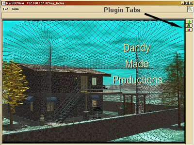

Introduction
The MyJSQLView application as of v3.17 supports a fully
modular plugin architecture. The plugin architecture allows the application to
dynamically load code from the installation's sub-directory, lib/plugin, as the
program is initialized when first run. Any Java JAR file placed in that directory
will be scanned for the proper contents that can be identified as a MyJSQLView plugin.
Once identified the MyJSQLView application will attempt to add that plugin as one
of the main tabs the user will see on the right hand side of the MyJSQLView window
as shown in Figure 1. As an alternative to loading plugins automatically from
the plugin directory a user may use the Tools | Plugin Management interface to
manually load plugins that thereafter will also be available for use. Once a plugin
is loaded then it will have access to the MyJSQLView public API. What this mean is
the plugin may obtain connections to the database, manipulate data in tables or
create custom evaluation routines to analyze and report database contents.

Figure 1. MyJSQLView Main Interface
MyJSQLView_PluginModule
The core aspect of the MyJSQLView plugin module architecture is
oriented around the abstract MyJSQLView_PluginModule class. This class implements
the Plugin Module Interface which defines the needed routines, class methods, that
are required for loading and running a plugin module. The code for the MyJSQLView_PluginModule
is provided here and shown in Listing 1. below. From this code listing we
see the MyJSQLView_PluginModule class has a default no argument constructor and
several methods. All plugins which will extend this class should do no initialization
work in the constructor and just allow the default super() to be called. The key
initialization for a plugin should be allocated to the initPlugin() method. The
initPlugin() method has two argument instances of MyJSQLView_Frame and String which
will not be discussed or used in this basic tutorial for plugins, but will be covered
in more advanced plugin module article(s). Just as a note at this time, the MyJSQLView_Frame
argument instance will allow a plugin to gain access to MyJSQLView's standard database
Menu commands. Now from the listing one should see that the initPlugin() method is
commented out for the MyJSQLView_PluginModule abstract class. This is because this
will force you as a developer to implement this method in your plugin module class.
Code Listing 1: (MyJSQLView_PluginModule.java)
//=================================================================
// MyJSQLView MyJSQLView_PluginModule Class
//=================================================================
//
// This class provides the abstract framework for plugin classes
// to extends in order to properly function within the MyJSQLView
// application.
//
// < MyJSQLView_PluginModule.java >
//
//=================================================================
// Copyright (C) 2005-2012 Dana M. Proctor
// Version 3.3 10/01/2012
//
// This program is free software; you can redistribute it and/or
// modify it under the terms of the GNU General Public License
// as published by the Free Software Foundation; either version
// 2 of the License, or (at your option) any later version. This
// program is distributed in the hope that it will be useful,
// but WITHOUT ANY WARRANTY; without even the implied warranty
// of MERCHANTABILITY or FITNESS FOR A PARTICULAR PURPOSE. See
// the GNU General Public License for more details. You should
// have received a copy of the GNU General Public License along
// with this program; if not, write to the Free Software Foundation,
// Inc., 59 Temple Place, Suite 330, Boston, MA 02111-1307 USA
// (http://opensource.org)
//
//=================================================================
// Revision History
// Changes to the code should be documented here and reflected
// in the present version number. Author information should
// also be included with the original copyright author.
//=================================================================
// Version 1.0 Initial MyJSQLView_PluginModule Class.
~
~
~
// 3.2 Added Class Instances category, size, & Their Getter Methods.
// 3.3 Comment Change.
//
//-----------------------------------------------------------------
// danap@dandymadeproductions.com
//=================================================================
package com.dandymadeproductions.myjsqlview.plugin;
import java.util.ArrayList;
import javax.swing.ImageIcon;
import javax.swing.JMenuBar;
import javax.swing.JPanel;
import javax.swing.JToolBar;
/**
* The MyJSQLView_PluginModule class provides the abstract framework
* for plugin classes to extends in order to properly function within
* the MyJSQLView application.
*
* @author Dana M. Proctor
* @version 3.3 10/01/2012
*/
public abstract class MyJSQLView_PluginModule implements PluginModuleInterface
{
// Class Instances.
//protected MyJSQLView_Frame parent;
protected String pathFileName;
public String name, author;
protected String version, description, category;
protected int size;
protected ImageIcon tabIcon;
protected JMenuBar menuBar;
protected JToolBar toolBar;
protected JPanel panel;
//===========================================================
// MyJSQLView_PluginModule Constructor
//===========================================================
public MyJSQLView_PluginModule()
{
// Just Initialize to a NULL condition.
pathFileName = null;
name = null;
author = null;
version = null;
description = null;
category = null;
size = 0;
tabIcon = null;
menuBar = null;
toolBar = null;
panel = null;
}
//==============================================================
// Class method to setup up your plugin.
// OVERIDE THIS METHOD!
//==============================================================
/*
public void initPlugin(MyJSQLView_Frame mainFrame, String path)
{
// This is where the plugin should be initialized.
parent = mainFrame;
}
*/
//==============================================================
// Class methods to get/set the plugin's file name.
//==============================================================
public String getPath_FileName()
{
return pathFileName;
}
//==============================================================
// Class method to get/set the plugin's name.
// Interface requirement.
//==============================================================
public String getName()
{
return name;
}
//==============================================================
// Class method to get/set the plugin's author.
// Interface requirement.
//==============================================================
public String getAuthor()
{
return author;
}
//==============================================================
// Class method to obtain the plugin's version number.
// Interface requirement.
//==============================================================
public String getVersion()
{
return version;
}
//==============================================================
// Class method to obtain the plugin's description.
// Interface requirement.
//==============================================================
public String getDescription()
{
return description;
}
//==============================================================
// Class method to obtain the plugin's category.
// Interface requirement.
//==============================================================
public String getCategory()
{
return category;
}
//==============================================================
// Class method to obtain the plugin's size.
// Interface requirement.
//==============================================================
public int getSize()
{
return size;
}
//==============================================================
// Class method to allow the collection of a image icon that
// will be used as an identifier in the MyJSQLView tab structure.
// NOTE: The tab icon should be no larger than 12 x 12.
// Interface requirement.
//==============================================================
public ImageIcon getTabIcon()
{
return tabIcon;
}
//==============================================================
// Class method to obtain the plugin's JMenuBar that can be
// used to control various aspects of the modules functionality.
// Interface requirement.
//==============================================================
public JMenuBar getMenuBar()
{
return menuBar;
}
//==============================================================
// Class method to allow the collection of a JToolBar to be
// used with the plugin module.
// Interface requirement.
//==============================================================
public JToolBar getToolBar()
{
return toolBar;
}
//==============================================================
// Class method for returning a JPanel for inclusion in the
// MyJSQLView application's main tab. Interface requirement.
//==============================================================
public JPanel getPanel()
{
return panel;
}
//==============================================================
// Class method for being able to set the database tables, occurs
// if the database is reloaded.
// Interface requirement.
//==============================================================
public void setDBTables(ArrayList<String> tableNames)
{
// Do what you will if you need database table names.
}
}
|
The key aspect of the initPlugin() method that a developer should know is that
it should create a custom JPanel component that MyJSQlView will use to load into
its tabbed pane for your plugin. That panel will be what users will see when
your plugin tab is selected from the MyJSQLView's main interface window on the
right hand side. The correlated companion class method in the MyJSQView_PluginModule
class is the getPanel() method. That method should return the JPanel component
that is created in the initPlugin() method.
Other methods in the MyJSQLView_PluginModule class,
allow the developer to return the name and an icon that will be used to identify
a plugin's tab. The name will appear as the tooltip for the tab and the icon
will become the insignia for the tab. The icon returned through the getTabIcon()
method should be no larger than 12 x 12 pixels. Two of the other getter methods
shown in the listing allows a plugin to create its own Menu and Toolbar that
will be used in conjunction with the module. Several other getter methods are
also provided that allow a plugin to provide various other information for
consumption. The The last method that is included in the MyJSQLView_PluginModule
class is the setDBTables() method. This routine allows for your plugin to
get an updated reload of the database tables that may occur during the running
of the MyJSQLView application.
Basic Plugin Example
The MyJSQLView project has an example Eclipse development
environment setup that a developer may download to use with the following basic
plugin examples. The download may be found at the Dandy Made Productions'
web site under the MyJSQLView project's plugins page,
MyJSQLView_Plugin. One may also just use the default MyJSQLView installation
directory or a copy of that directory to implement a new plugin module. If one of the
latter two options is chosen then just create a new package, folder, under the src
directory to hold the new plugin's source code. In the first example given below a
new package, myplugin, under the src directory has been created to hold the Java
code for the plugin.
Our first basic plugin outlined here is included with
the development setup and has only one class that extends the MyJSQLView_PluginModule
discussed above. The code is shown below in Lisfile:///home/danap/development/Java/MyJSQLView/docs/Plugins/PluginBasics/MyJSQLView_PluginBasics.htmlting 2. and is the bare minimum
needed for a new plugin to be added to the MyJSQLView application. The code does
nothing more then create an empty panel for a new plugin tab. Notice the PluginModule
class extends the MyJSQLView_PluginModule and just provides an empty constructor
has discussed previous and overrides the initPlugin(), getName(), getPanel(), and
setDBTables() methods. In the initPlugin() method we create a JPanel component
instance by the name of myPluginPanel which is then returned to the MyJSQLView
application's main code through the getPanel() method. All the setDBTables()
method does is repaint that panel. The getName() method in the PluginModule class
returns the String "My Plugin" that is used for the plugin tab's ToolTip.
NOTICE: All PLUGINS MUST FOLLOW THE BASIC INTERFACE DESCRIBED HERE FOR A
MyJSQLView_PluginModule AND BE GIVEN THE CLASS NAME PluginModule. MyJSQLView
WILL ONLY SEARCH FOR AND LOAD PLUGIN CLASSES GIVEN THE NAME PluginModule!
Code Listing 2: (MyPlugin PluginModule.java)
//=================================================================
// MyPlugin PluginModule Class
//=================================================================
//
// This class provides the hook to incorporate a external plugin
// module into the MyJSQLView application.
//
// < PluginModule.java >
//
//=================================================================
// Copyright (C) 2006-2013 Dana M. Proctor
// Version 1.7 03/09/2013
//
// This program is free software; you can redistribute it and/or
// modify it under the terms of the GNU General Public License
// as published by the Free Software Foundation; either version
// 2 of the License, or (at your option) any later version. This
// program is distributed in the hope that it will be useful,
// but WITHOUT ANY WARRANTY; without even the implied warranty
// of MERCHANTABILITY or FITNESS FOR A PARTICULAR PURPOSE. See
// the GNU General Public License for more details. You should
// have received a copy of the GNU General Public License along
// with this program; if not, write to the Free Software Foundation,
// Inc., 59 Temple Place, Suite 330, Boston, MA 02111-1307 USA
// (http://opensource.org)
//This class provides a generic panel in the appearance of
// a form for selecting the CSV data export options.
//=================================================================
// Revision History
// Changes to the code should be documented here and reflected
// in the present version number. Author information should
// also be included with the original copyright author.
//=================================================================
// Version 1.0 Original MyPlugin MyJSQLView_PluginModule.
// 1.1 Addition of Argument String path to initPlugin() Method.
// 1.2 Update to Sync With MyJSQLView v3.31 Release.
// 1.3 Update to Sync With MyJSQLView v3.33 Release.
// 1.4 Update to Sync With MyJSQLView v3.34 Release.
// 1.5 Update to Sync With MyJSQLView v3.35 Release.
// 1.6 Update to Sync With MyJSQLView v3.40 Release.
// 1.7 Update to Sync With MyJSQLView v3.44 Release.
//
//-----------------------------------------------------------------
// danap@dandymadeproductions.com
//=================================================================
package myplugin;
import java.util.ArrayList;
import javax.swing.ImageIcon;
import javax.swing.JMenuBar;
import javax.swing.JPanel;
import javax.swing.JToolBar;
import com.dandymadeproductions.myjsqlview.gui.MyJSQLView_Frame;
import com.dandymadeproductions.myjsqlview.plugin.MyJSQLView_PluginModule;
/**
* The PluginModule class provides the hook to incorporate a external
* plugin module into the MyJSQLView application.
*
* @author Dana M. Proctor
* @version 1.7 03/09/2013
*/
public class PluginModule extends MyJSQLView_PluginModule
{
// Class Instances
private JPanel myPluginPanel;
//==============================================================
// PluginModule Constructor.
//==============================================================
public PluginModule()
{
super();
}
//==============================================================
// Class method to initialize your plugin.
//==============================================================
public void initPlugin(MyJSQLView_Frame parentFrame, String path)
{
myPluginPanel = new JPanel();
}
//==============================================================
// Class method to meet the interface requirements for returning
// the name of the module.
//==============================================================
public String getName()
{
return "My Plugin";
}
//==============================================================
// Class method to allow the collection of a image icon that
// will be used as an identifier in the MyJSQLView tab structure.
// NOTE: The tab icon should be no larger than 12 x 12.
//==============================================================
public ImageIcon getTabIcon()
{
return null;
}
//==============================================================
// Class method to meet the interface requirements of returning
// a JMenuBar that can be used to control various aspects of
// the modules functionality.
//==============================================================
public JMenuBar getMenuBar()
{
return null;
}
//==============================================================
// Class method to allow the collection of a JToolBar to be
// used with the plugin module.
//==============================================================
public JToolBar getToolBar()
{
return null;
}
//==============================================================
// Class method to meet the interface requirements for returning
// a JPanel for inclusion in the MyJSQLView application's main
// tab.
//==============================================================
public JPanel getPanel()
{
return myPluginPanel;
}
//==============================================================
// Class method to meet the interface requirements for being
// able to set the database tables.
//==============================================================
public void setDBTables(ArrayList<String> tableNames)
{
myPluginPanel.repaint();
}
}
|
Functional Plugin Example
The next plugin module example outlined is a completely
functional module that returns the record, row, count for a selected table.
We start out again with the basic outline for a PluginModule class as show
in code Listing 2., but now create an additional class to handle the JPanel
component creation in the initPlugin() method. Code Listing 3. below shows
the modified PluginModule class that has now added the tableRecordCountPanel
class instance. That new instance is a type TableRecordCountPanel that extends
the JPanel object from the Java API. The tableRecordCountPanel instance is
created in the inputPlugin() method and takes an argument of the database's
tables in the form of a Vector. Here is the first illustration of a module
using the MyJSQLView public API to access the table names from MyJSQLView's
ConnectionManager class.
Code Listing 3: (Table Record Count PluginModule.java)
//=================================================================
// TableRecordCount PluginModule Class
//=================================================================
//
// This class provides the hook to incorporate a external plugin
// module into the MyJSQLView application.
//
// < PluginModule.java >
//
//=================================================================
// Copyright (C) 2006-2012 Dana M. Proctor
// Version 2.1 09/29/2012
//
// This program is free software; you can redistribute it and/or
// modify it under the terms of the GNU General Public License
// as published by the Free Software Foundation; either version
// 2 of the License, or (at your option) any later version. This
// program is distributed in the hope that it will be useful,
// but WITHOUT ANY WARRANTY; without even the implied warranty
// of MERCHANTABILITY or FITNESS FOR A PARTICULAR PURPOSE. See
// the GNU General Public License for more details. You should
// have received a copy of the GNU General Public License along
// with this program; if not, write to the Free Software Foundation,
// Inc., 59 Temple Place, Suite 330, Boston, MA 02111-1307 USA
// (http://opensource.org)
//
//=================================================================
// Revision History
// Changes to the code should be documented here and reflected
// in the present version number. Author information should
// also be included with the original copyright author.
//=================================================================
// Version 1.0 Original TableRecordCount MyJSQLView_PluginModule.
~
~
~
// 2.1 Added Class Instance pluginAuthor to Meet New MyJSQLView v3.35++
// Plugin Requirements.
//
//-----------------------------------------------------------------
// danap@dandymadeproductions.com
//=================================================================
package com.dandymadeproductions.tablerecordcount;
import java.util.ArrayList;
import javax.swing.ImageIcon;
import javax.swing.JPanel;
import com.dandymadeproductions.myjsqlview.datasource.ConnectionManager;
import com.dandymadeproductions.myjsqlview.gui.MyJSQLView_Frame;
import com.dandymadeproductions.myjsqlview.plugin.MyJSQLView_PluginModule;
/**
* The PluginModule class provides the hook to incorporate a external plugin
* module into the MyJSQLView application.
*
* @author Dana M. Proctor
* @version 2.1 09/29/2012
*/
public class PluginModule extends MyJSQLView_PluginModule
{
// Class Instances
private String pluginName, pluginAuthor;
private TableRecordCountPanel tableRecordCountPanel;
//==============================================================
// PluginModule Constructor.
//==============================================================
public PluginModule()
{
super();
}
//==============================================================
// Class method to initialize your plugin.
//==============================================================
public void initPlugin(MyJSQLView_Frame parentFrame, String path)
{
pluginName = "Table Record Count";
pluginAuthor = "Dandy Made Productions";
tableRecordCountPanel = new TableRecordCountPanel(path, ConnectionManager.getTableNames());
}
//==============================================================
// Class method to meet the interface requirements for getting
// the name of the module.
//==============================================================
public String getName()
{
return pluginName;
}
//==============================================================
// Class method to meet the interface requirements for getting
// the author of the module.
//==============================================================
public String getAuthor()
{
return pluginAuthor;
}
//==============================================================
// Class method to return the version release number of the
// plugin module.
//==============================================================
public String getVersion()
{
return TableRecordCountPanel.getVersion();
}
//==============================================================
// Class method to meet the interface requirements of returning
// a ImageIcon that will be used as the plugin's tab Icon.
//==============================================================
public ImageIcon getTabIcon()
{
return tableRecordCountPanel.getTabIcon();
}
//==============================================================
// Class method to meet the interface requirements for returning
// a JPanel for inclusion in the MyJSQLView application's main
// tab.
//==============================================================
public JPanel getPanel()
{
return tableRecordCountPanel;
}
//==============================================================
// Class method to meet the interface requirements for being
// able to set the database tables.
//==============================================================
public void setDBTables(ArrayList<String> tableNames)
{
tableRecordCountPanel.reloadPanel(tableNames);
tableRecordCountPanel.repaint();
}
}
|
The rest of the PluginModule class is similar to
the previous example with the methods getName() and getPanel() returning to
the MyJSQLView application the String "Table Record Counts" for the tooltip
in the plugin's tab and of course the tableRecordCountPanel that will be seen.
The last method setDBTables() in the class has only changed slightly from the
early base version because instead of just repainting the plugin tab's panel
it reloads the database's table names via a class method, reloadPanel(), in
the TableRecordCountPanel class.
In proceeding with the discussion of a functional plugin module
we now look indepth at the TableRecordCountPanel class. Instead of showing the
listing in length for that class the major elements are described as required.
All resources for the discussion in this article are made available via links
at the end. Any classes given as part of this tutorial are covered by the GPL
and may be used in accordance with that license.
As indicated earlier the TableRecordCountPanel class extends the JPanel
Java API and in addition implements the ActionListener interface. By
extending the JPanel class from Java we inherit all the aspects of a panel
object needed as required by the PluginModule class and with the ActionListener
we enable the ability to process events. The TableRecordCountPanel class
instance definitions and constructor are shown in Listing 4. below. The
class defines several instances that will be used to display and process record
counts for tables in the database. The main class instance defined is a
JComboBox called tableSelectionComboBox. This component will be used to
select the name of the table to have its records counted. A second object
is a JLabel that will be used to indicate the result of a record count. An
additional class instance will be used to disable the processing of events when
a record count is processing or table names are reloaded and is called
disableActions.
Code Listing 4: (Constructor TableRecordCountPanel.java)
//=================================================================
// TableRecordCount TableRecordCountPanel
//=================================================================
//
// This class provides the panel that holds components
// associated with MyJSQLView basic tutorial for a plugin module.
//
// < TableRecordCountPanel.java >
//
//=================================================================
// Copyright (C) 2005-2012 Dana M. Proctor
// Version 2.3 10/23/2012
//
~
~
~
//
//=================================================================
// Revision History
// Changes to the code should be documented here and reflected
// in the present version number. Author information should
// also be included with the original copyright author.
//=================================================================
// Version 1.0 Initial TableFieldChartsPanel Class.
~
~
~
// 2.3 Minor Code Organizing, Move resouceBundle to Constructor.
//
//-----------------------------------------------------------------
// danap@dandymadeproductions.com
//=================================================================
package com.dandymadeproductions.tablerecordcount;
import java.awt.event.ActionEvent;
import java.awt.event.ActionListener;
import java.sql.Connection;
import java.sql.ResultSet;
import java.sql.SQLException;
import java.sql.Statement;
import java.util.ArrayList;
import java.util.Iterator;
import javax.swing.ImageIcon;
import javax.swing.JComboBox;
import javax.swing.JLabel;
import javax.swing.JPanel;
import com.dandymadeproductions.myjsqlview.MyJSQLView;
import com.dandymadeproductions.myjsqlview.datasource.ConnectionManager;
import com.dandymadeproductions.myjsqlview.gui.panels.DBTablesPanel;
import com.dandymadeproductions.myjsqlview.gui.panels.TableTabPanel;
import com.dandymadeproductions.myjsqlview.utilities.MyJSQLView_ResourceBundle;
import com.dandymadeproductions.myjsqlview.utilities.MyJSQLView_Utils;
/**
* The TableRecordCountPanel class provides the panel that holds
* components associated with the MyJSQLView basic tutorial for a
* plugin module.
*
* @author Dana M. Proctor
* @version 2.3 10/23/2012
*/
class TableRecordCountPanel extends JPanel implements ActionListener
{
// Class Instances.
private static final long serialVersionUID = 2500935698652883672L;
private ImageIcon tabIcon;
private JComboBox tableSelectionComboBox;
private JLabel recordCountLabel;
private boolean disableActions;
private final static String VERSION = "Version 2.3";
//==============================================================
// TableRecordCountPanel Constructor
//==============================================================
TableRecordCountPanel(String path, ArrayList<String> tableNames)
{
// Method Instances.
MyJSQLView_ResourceBundle resourceBundle;
String pathDirectory, localeDirectory, imagesDirectory, resource;
JLabel tableNameLabel;
~
~
~
// Create the components to select the database table,
// identify the record count and the actual processed
// row number.
// Table Selector.
tableSelectionComboBox = new JComboBox();
tableSelectionComboBox.setEnabled(false);
if (!tableNames.isEmpty())
{
Iterator<String> tableNamesIterator = tableNames.iterator();
while (tableNamesIterator.hasNext())
tableSelectionComboBox.addItem(tableNamesIterator.next());
tableSelectionComboBox.setEnabled(true);
}
tableSelectionComboBox.addActionListener(this);
add(tableSelectionComboBox);
// Identify Count.
resource = resourceBundle.getResourceString("TableRecordCountPanel.label.RecordCount",
"Record Count");
tableNameLabel = new JLabel(resource + ": ");
add(tableNameLabel);
// Record Count Value.
recordCountLabel = new JLabel("0");
add(recordCountLabel);
}
|
Our constructor for the class does nothing more than create these components,
assigned them default values, and add them to the panel. Note, the tableNames
ArrayList argument in the constructor that was passed from the PluginModule
and is used to fill the tableSelectionComboBox elements via a Iterator so that
we isolate those elements from that ArrayList object.
Note: The actually constructor in the code contains some additional
aspects that are used to derive resources for the class. These are not pertinent to
the discussion of a basic plugin, but will be fully covered in the the advanced
plugin turtorial.
Now in the constructor an ActionListener was added to the tableSelectionComboBox
instance so events from that object selection changes could be captured and processed
in the actionPerformed() method shown in Listing 5 below. As a user selects
a table name from the pull down menu in that ComboBox a thread is created in
the actionPerformed() method and forwards processing to the method exectueRecordCount().
In this method we do all the work for determining the record count for a table.
First a connection is obtained from the MyJSQLView ConnectionManager class
public API getConnection(). Then a SQL statement object is created and the
defined schema name for the selected database table is determined from the
associated TableTabPanel in MyJSQLView. A TableTabPanel is created for each
table in the database and will hold valuable information about the table such as
name, fields, keys, and other pertinent characteristics.
Code Listing 5: (Methods actionPerformed() & executeRecordCount() TableRecordCountPanel.java)
~
~
//==============================================================
// ActionEvent Listener method for detecting the selection of
// a table from the tableSelectionComboBox so that the row,
// record count can be processed.
//==============================================================
public void actionPerformed(ActionEvent evt)
{
Object panelSource = evt.getSource();
if (panelSource instanceof JComboBox & !disableActions)
{
Thread actionThread = new Thread(new Runnable()
{
public void run()
{
executeRecordCount();
}
}, "TableRecordCountPanel.actionThread");
actionThread.start();
}
}
//==============================================================
// Class Method to execute the required processing the selected
// database table to determine the record count.
//==============================================================
private void executeRecordCount()
{
// Setup Instances.
Connection dbConnection;
String tableName;
String schemaTableName;
String sqlStatementString;
Statement sqlStatement;
ResultSet rs;
int rowCount = 0;
tableSelectionComboBox.setEnabled(false);
disableActions = true;
// Get Connection to Database.
dbConnection = ConnectionManager.getConnection("TableRecordCountPanel executeRecordCount()");
try
{
// Create a statement object to be used with the connection.
sqlStatement = dbConnection.createStatement();
// Collect the selected table from the combobox.
tableName = (String) tableSelectionComboBox.getSelectedItem();
// System.out.println(tableName);
// Collect the table name as referenced in the database.
TableTabPanel selectedTablePanel = DBTablesPanel.getTableTabPanel(tableName);
if (selectedTablePanel == null)
return;
tableName = selectedTablePanel.getTableName();
// System.out.println(tableName);
// Collect the properly formatted schema table name with identifier
// quotes for execution in a SQL statement.
schemaTableName = MyJSQLView_Utils.getSchemaTableName(tableName);
// System.out.println(schemaTableName);
// Setup the statement string and execute the database query.
sqlStatementString = "SELECT COUNT(*) FROM " + schemaTableName;
rs = sqlStatement.executeQuery(sqlStatementString);
rs.next();
rowCount = rs.getInt(1);
// Set the record count label to reflect the results
// and close out.
recordCountLabel.setText(Integer.toString(rowCount));
rs.close();
sqlStatement.close();
}
catch (SQLException e)
{
ConnectionManager.displaySQLErrors(e, "TableRecordCountPanel executeRecordCount()");
recordCountLabel.setText("0");
tableSelectionComboBox.setEnabled(true);
disableActions = false;
}
// Close connection to database.
ConnectionManager.closeConnection(dbConnection, "TableRecordCountPanel executeRecordCount()");
tableSelectionComboBox.setEnabled(true);
disableActions = false;
}
~
~
|
With all the needed information for creating the required SQL statement with
regard to collecting a count of the rows in the table we execute the query and
obtain the resultset then store the value in the instance rowCount. Now all
that is required is to assign the value to the recordCountLabel and close up.
The final detail of the functional plugin example has
to do with the reloading of the table names if changes occur in the database.
A user could possibly change the characteristics of a table in the database
via a import of a SQL statement or statements. MyJSQLView if told will reload
the database and through the PluginModule class method setDBTables() which will
in turn send this information to your plugin. The code Listing 6 shows the
TableRecordCountPanel class method reloadPanel() that is called from the PluginModule
code discussed early in code Listing 3. In this method's argument is passed
the reloaded table names from MyJSQLView. The method essentially just removes
all the elements in the tableSelectionComboBox then populates it with the new
table names.
Code Listing 6: (Method reloadPanel() TableRecordCountPanel.java)
~
~
//==============================================================
// Class Method to reset the panel's table selector comboBox
// if MyJSQLView is called to reload the database tables.
//==============================================================
protected void reloadPanel(ArrayList<String> tableNames)
{
// Insure no actions are taken during reload.
tableSelectionComboBox.setEnabled(false);
disableActions = true;
// Clear the components of old data.
tableSelectionComboBox.removeAllItems();
recordCountLabel.setText("0");
// Try reloading tables.
if (!tableNames.isEmpty())
{
Iterator<String> tableNamesIterator = tableNames.iterator();
while (tableNamesIterator.hasNext())
{
tableSelectionComboBox.addItem(tableNamesIterator.next());
}
tableSelectionComboBox.setEnabled(true);
}
disableActions = false;
}
~
~
|
Summary
In this tutorial for MyJSQLView Plugin Basics has been discussed
the general configuration needed to get a MyJSQLView plugin installed via
placement of a JAR file in the lib/plugin directory or via the Tools |
Plugin Management menu. The main class that MyJSQLView will look for in the
JAR file needs to be called PluginModule and must follow the outline for the
abstract class MyJSQLView_PluginModule shown in code Listing 1. A plugin
must implement at least the initPlugin() method from the Plugin Module Interface.
A basic PluginModule class was given in code Listing 2. that just created
a empty JPanel component for the plugin that was given the name MyPlugin. A
functional plugin example was outlined via two classes, PluginModule and
TableRecordCountPanel. This example plugin provided a more complete instance
of interaction with MyJSQLView's public API such has getting a connection and
calling on a TableTabPanel.
Resources
MyJSQLView_PluginModule Class
MyJSQLView Eclipse Plugin Environment Setup
Basic PluginModule Class
Functional PluginModule Class
TableRecordCountPanel Class
|